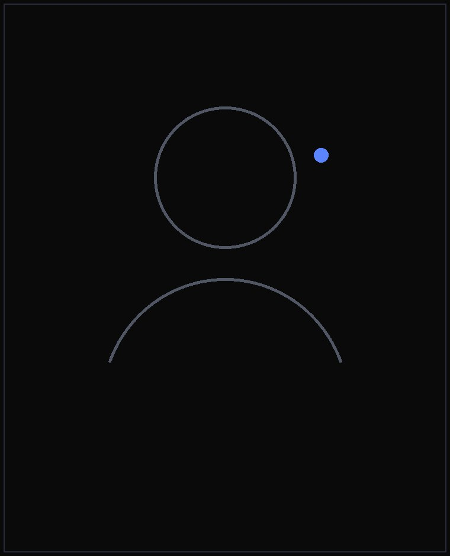

Portafolio · Guatemala
Luis
Felipe
Software Engineer · DevOps Tech Lead
Construyo plataformas SaaS escalables, aplicaciones web modernas y flujos de automatización. Full-stack de formación, DevOps por convicción — de la arquitectura al servidor que la sostiene.

01 / Sobre mí
Ingeniería con nombre y apellido.
“Un sistema bien construido no se nota: simplemente funciona, todos los días, mientras el equipo se concentra en crecer.”
Felix Luis Felipe Chávez Ramírez
Software Engineer · DevOps Tech Lead
Ingeniero de software orientado a plataformas SaaS escalables, aplicaciones web modernas y entornos DevOps. Combino el desarrollo full-stack con la gestión técnica de proyectos: arquitectura de sistemas, optimización de bases de datos, integración de APIs y despliegues estables y seguros. Estudio Ingeniería de Software en la Universidad Mesoamericana y me formé en Platzi. Hablo español (nativo), inglés (C1) y alemán (A1).
Sitio personal →02 / Trayectoria
Dónde he construido.
Software Engineer · DevOps Tech Lead
Fletes USA
Lidero el desarrollo y mantenimiento de plataformas SaaS escalables: soluciones full-stack para operaciones internas, gestión de clientes y automatización. Arquitectura de sistemas, optimización de bases de datos, integración de APIs y flujos de despliegue DevOps estables y seguros.
Project Manager
Cari Latinoamérica
Gestión de proyectos tecnológicos con metodologías ágiles (Scrum): coordinación de equipos, planificación de sprints, seguimiento en Jira y comunicación entre stakeholders, desarrolladores y operaciones.
Software Automation Engineer
ServiTech
Diseño y mantenimiento de soluciones de automatización: pruebas, despliegues, monitoreo e integración de sistemas para reducir tareas manuales y aumentar la confiabilidad del software.
Ingeniería de Software
Universidad Mesoamericana, Quetzaltenango · Platzi
Formación universitaria en curso, complementada con especialización continua en desarrollo web.
03 / Trabajo
Software en producción.
Sistemas y plataformas que sostienen la operación diaria de empresas reales.
Fletes USA — Freight Manager System
Plataforma integral de gestión de fletes: operaciones, clientes, rastreo en tiempo real y automatización de procesos.
Ver en vivo ↗ 02 Sistema · Bienes raícesGolden Homes System
Gestión de ventas inmobiliarias: inventario de lotes, reservas, planos, comisiones y roles de usuario.
Más información → 03 Web · ComercioFelplex GT & SV
Presencia digital multi-país con catálogo y experiencia de marca consistente en Guatemala y El Salvador.
Ver en vivo ↗ 04 Web · SaludCarifree
Sitio para clínica dental enfocado en conversión de pacientes: claro, rápido y fácil de administrar.
Ver en vivo ↗Contacto
¿Trabajamos juntos?
Cuéntame qué necesitas construir. Respondo en menos de 24 horas.